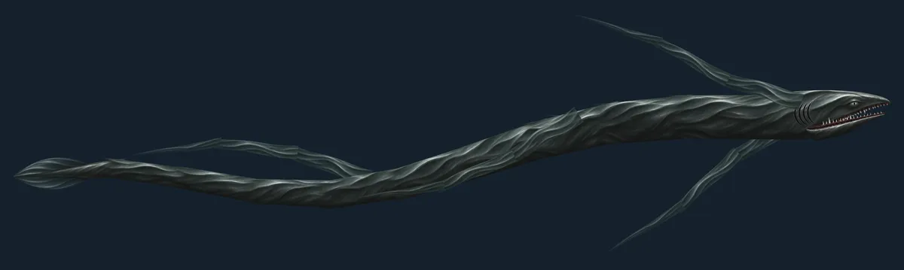

欢迎来到 Biopunk for Barotrauma
模组加入了以异星血浆为食的活体生物服、共生武器、丘脑基因，以及来自深渊的海蛇格比拉。
当前模组版本： 0.0.6 alpha · 游戏 1.13.5.0


生物服
- +8%
- 移动速度（生物服吃饱时）
- −30%
- 受到的伤害：创伤、出血、烧伤、中毒、辐射
- 7000
- 抗压能力，等同于 PUCS防护服
- 约5分钟
- 每瓶血浆（水下）
- 周围有空气时，生物服 不消耗血浆
- 在水下或氧气低于50%时，消耗血浆供氧
- 缺少异星血浆时，生物服会大幅减慢行动，每 2 秒对躯干造成 2 点内部伤害。装入有血浆的容器或脱下生物服即可停止伤害。
配方
1残骸摧毁丘脑核心 → 未提纯的遗传物质
2遗传物质 + 疗素 → 丘脑遗传物质
3遗传物质 + 奇怪的蛋 → 生物服基底
445 秒基底 + 潜水员的遗骸 → 生物服胚胎
5潜水服槽位胚胎 + 异星血浆（约3瓶）→ 生物服
材料
- 遗传物质：被感染残骸中的丘脑核心，必定掉落
- 疗素：医药加工台、商店
- 奇怪的蛋：任意宠物蛋；储物柜和商店
- 潜水员的遗骸：储物柜和矿物柜
- 异星血浆：怪物、丘脑器官
- 针腺：脊刺尸体的物品栏
| 武器 | 伤害 | 特殊效果 |
|---|---|---|
| 骨棘刃 近战 |
活体近战刀刃，可部分穿透护甲并短暂减缓目标。不需要装备生物服。 | |
| 共生毒刺 近战 |
在穿着已喂饱生物服的人手中，伤害提高到 2.5 倍（25 / 15），每次命中都会把受害者的血液抽入生物服的血瓶。 | |
| 针刺枪 远程 |
从针腺发射。针腺为空时无法射击 | |
| 针腺 弹匣 |
每6秒长出1根针。空的针腺可在加工台用异星血浆重新培育 |
活体近战刀刃，可部分穿透护甲并短暂减缓目标。不需要装备生物服。
2 份钙 + 1 份有机纤维 + 1 份异星血浆 → 骨棘刃
30 秒 · 建议武器技能 35
在受感染的沉船中摧毁丘脑核心，在研究台上用疗素提纯掉落的遗传物质。把提纯后的基因放入基因拼接器，然后在健康界面装备拼接器。
携带者激活基因后，亲手击杀的敌方 NPC 会在 8 秒后复活并为其作战，5 分钟后死亡。同一目标每回合只能复活一次。
复活能力需要 LuaCs for Barotrauma。多人模式由服务器运行，单人模式由客户端运行。
与普通基因一样，在研究站研究未鉴定的遗传物质时有机会获得。将它装入基因拼接器后，携带者口中会长出一条带钩的长舌。
按攻击键（默认 R）向前射出舌头：钩住目标，把它拉向携带者并短暂击晕。冷却时间 8 秒。该基因不需要 LuaCs。

栖息在深渊里的巨型海蛇，长着飘带状鳍。它在深处绕着潜艇游动，并叼走艇外的潜水员。
-
0.0.6 alpha
新的武器贴图
当前版本- 改动针刺枪、共生毒刺和骨棘刃换上了原版风格的新贴图。
- 改动丘脑基因瓶改为与原版基因一致的样式。
- 改动针刺枪的握持位置已按新贴图调整。
-
0.0.5 alpha
骨棘刃、基因与格比拉
- 新增骨棘刃：可在制造机中制作的骨质利刃。
- 新增丘脑基因：被携带者击杀的敌人会在 8 秒后复活，并为其作战 5 分钟。
- 新增深渊海蛇格比拉，以及带有钩舌的 Latcher 基因。
- 新增中文和西班牙语本地化。
- 改动生物服和基因瓶的新贴图。
- 改动缺血的生物服现在会伤害穿戴者：每 2 秒造成 2 点内伤。
- 修复友方 NPC 不再攻击被复活的生物。
- 修复修复复活和目标选择时的 LuaCs 错误。
-
0.0.2 – 0.0.4
维护更新
- 改动三次创意工坊技术性重新上传：修正模组清单，并在简介中加入维基链接。没有新内容。
-
0.0.1 alpha
首次发布
- 新增生物服及其以丘脑遗传物质为起点的培育链。
- 新增共生毒刺、针刺枪和针腺。
按 F3打开控制台。把 inventory 换成 cursor，物品就会出现在光标处。
spawnitem bioexo inventory生物服spawnitem bioexo_embryo inventory生物服胚胎spawnitem bioexo_suitbase inventory生物服基底spawnitem bioexo_thalamusgene inventory丘脑基因spawnitem bioexo_bonespike inventory骨棘刃spawnitem bioexo_stinger inventory共生毒刺spawnitem bioexo_needler inventory针刺枪spawnitem bioexo_needlegland inventory针腺spawnitem alienblood inventory异星血浆spawnitem genesplicer inventory基因拼接器spawn gebira cursor格比拉spawn crawler outside艇外爬行者spawnitem stabilozine inventory疗素spawnitem diversremains inventory潜水员的遗骸spawnitem op_researchterminal cursor研究台（需要供电）spawnsub Dugong_Wrecked true带丘脑的被感染残骸spawn spineling outside艇外的脊刺giveaffliction bioexosymbiosis 2无需生物服的共生状态，用于测试武器